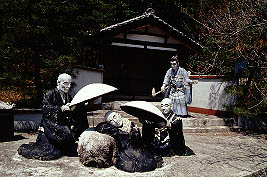

五色園/愛知県日進市
名古屋市の東、トヨタ博物館も近い畑と宅地が入り交じる典型的な郊外の風景の中に五色園の看板は現れる。
ここは自ら「宗教公園」と名乗り、本堂を中心に霊園墓地といった宗教施設と怪し気なコンクリート像が点在する公園とが合体したところである。言い換えてみれば娯楽と信仰をリミックスさせた、まさにこのサイトの為につくられたのではないか、と思える程、ファンキーブッダ仏恥義理で夜露死苦な状態なのである。
案内の看板に従って車を進めると入口が見えてくる。
・・・これがそれである。
決して有料道路の入口でもサファリパークのそれでもない。
お寺の入り口なのである。云ってみれば山門なのである。

門を潜る前に園内の案内図をチェック。
ここの敷地は広い、すごく広い。後に述べるが遭難しそうな程広い。
広い園内の所々には親鸞上人のエピソードを立体化したコンクリート像が点在している。
自動車王国愛知らしく園内はずずずい〜っと車でまわれる。ドライブスルー拝観が可能なのである。だから入口もあの形態なのだ。
通常、この五色園は入場無料だが4月は有料になる。なぜか。
答えは桜である。私が訪れた日はやや風が強くまさに桜吹雪きの中の五色園巡り、だったのである。
というわけで入口で入場料を払い、いざ園内へ。
桜吹雪の中早速現れたる最初のアトラクション。
みんな輪になり楽しくやってます。
こうしてお寺の境内に唐突にコンクリート像が現れて意表を突かれるのはなんだかミャンマーのような感じで楽しい。
お、花見客か
・・・と思ったら坊さん達でした。一人遅刻してきたようです。
「や〜おまたせ。急な仕事はいちゃってえ〜」
てな訳ではなく当然親鸞伝説の一場面である。
さらに進むと池が現れる。桜もキレイなので車を停める。
園内は車でぐるっと一周出来るが、幾つかのアトラクションは徒歩でないと見に行けないようになっている。
この辺、「車ばっか乗ってないで少しは歩きなさい」というありがたい教えと思い、桜咲く
池の周りの遊歩道を一周する。
大蛇の上に立つ人物と坊さんが向かい合っている。これは親鸞上人のお師匠さんの法然上人が大蛇になっちゃった偉い坊さんと再会する有名な寓話の一シーン。このようにこの五色園で採用されている伝説は半分は「ウソだろ〜」といった類のものであるが、その方が面白いからいいのである。
こーゆーのはなんといっても見てくれが大事ですから。
で、さらに遊歩道を進む。すると木の陰からいきなり田植えをしているおっさんが現れる。
このように桜の花の美しさなどに気を取られて珍寺神経ノーガード状態になっているとカウンターパンチが飛んでくるので要注意である。
しかも相手は2メートル以上。強者である。ただし表情はかなりユルいが。
その他、川の向こうにいる婆さんの持っている紙に遠隔操作で「南無阿弥陀仏」の6文字を浮き上がらせてビビらせた、じゃなく感動させたシーンなどもいいぞ。こうやって親鸞上人は日本各地を感動の渦に巻き込んで行ったのであ〜る。
で、ホントの公園（といっても遊具が少しあるだけ）を過ぎると本堂と霊園があらわれる。この辺だけがお寺らしいエリア。といっても所々、こーゆーのがあるので油断は出来ない。

ここまでが比較的道の整ったエリア。この先は鬱蒼とした山に入って行く。道も狭くなりコンクリート像が出現する密度もぐぐっと低くなってくる。それだけにいきなり現れるのでドライバーの方は安全運転を心掛けていただきたい。スピードは控えめに、シートベルトの着用はお忘れなく。
「上人狙撃」という刺激的なタイトルに惹かれて車を降りる。
階段の上にお堂があり、そこに上人像が山道を歩いている。なんだこれだけかあ、と思い車に戻ろうとしたときふと横を見ると・・・
おお！ビビったあ〜。草むらの陰に数人の男達が上人を襲撃すべくスタンバっているではないか！危うし、上人！＆こんな人気のないところに作るなよ〜。
ここらでは親鸞と敵対する「悪者」とのストーリーが展開されているのである。もっともこの後「悪者」は親鸞上人の人徳に触れ、改心して仏法に帰依するというオチなのだが。
この辺りになると車道なんだか歩道なんだか良く分からない状態になっていて、車を走らせているとやけに道が狭くなってきたなあ、と思っているとダートになってきて、最後はいきなり階段が現れて道がプツッと終わってしまう。そんなのばっかである。で、車を降りて最後のアトラクション、六角堂に向かう。それにしても広い。なんでこんなに広いんだろう。あ、道に迷った・・・
園内全体の地図は入口手前にしかなかったので最後の方はうろ覚えである。
下手したら遭難してしまう、こんなトコで遭難して新聞に載るのだけは御免だあ〜
と思ったら、目の前に六角堂が建っていた。そしてそのすぐ後ろには住宅地が迫っていて庭ではおっさんがゴルフの素振りをしていた・・・何てことはない一本小道を間違えただけだったのだ。しかしそれでもパニックになる位、ここの森は見通しが悪く、しかもどこから「奴ら」が躍りでてくるか分からないのだ。
車に戻り先に進む。と、いきなり視界が開けたらそこは最初に入ってきた入口のゲートの脇だった・・・
この門を潜った時はまさかゲリラ襲撃気分や遭難気分を味わえるとは思ってもみなかったのでこのゲート再会には正直ほっとした。
おそるべしドライブスルー拝観。後半戦はまさに魔境巡りなり。
2000.4.
情報提供は超絶のホームページ超天然ビルマ仏SHOWの作者の方です
珍寺大道場
HOME